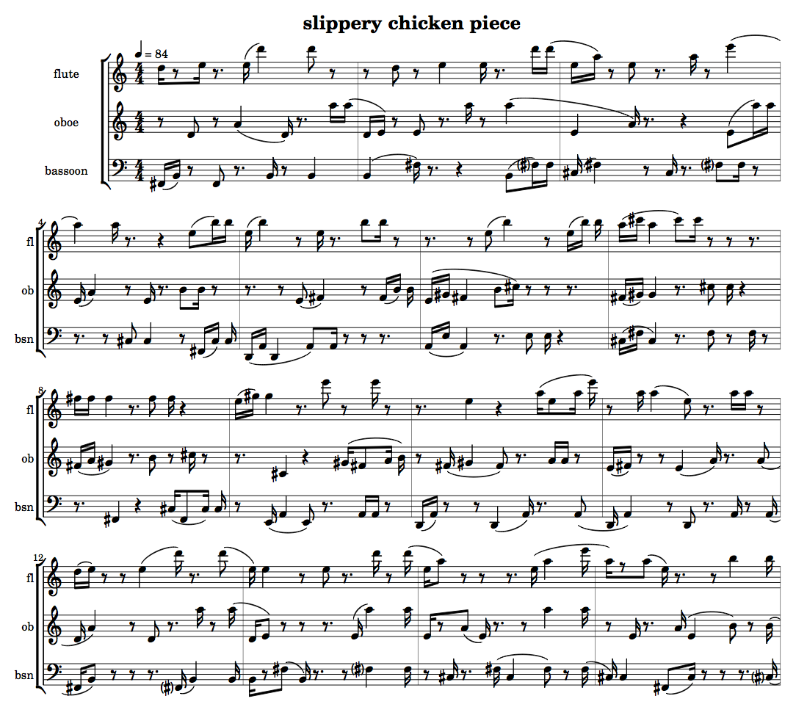

Permutations
+ Associated files
NB: An exercise relating to the material covered in this tutorial can be found on the Exercises page.
slippery chicken comes with a number of predefined
algorithmic functions that are designed to help the user generate new
lists from existing ones by making variations of the original lists or
their elements. These functions all fall under the general category
of permutations, and can be found in
the permutations.lsp source file. This page will provide
a brief introduction to the most frequently used of these
functions.
General attributes of the permutation functions
All of the permutation functions in slippery chicken use a
random algorithm that defaults to a fixed-seed
state. This means that random operations return the same results each
time they are started (providing they are run on the same Lisp). Most
of the functions have optional arguments that allow the user to reset
the random seed, as well as to disable it.
The individual permutation functions
+ permutations
The permutations function systematically generates a
list of all possible permutations of a set of consecutive integers
beginning with zero. It takes as its only argument an integer that
indicates the number of consecutive numbers
(including 0) to use. In other words, calling the
function with 4 will produce permutations of the
numbers 0, 1, 2, and 3.
The order of the resulting list of permutations will be the same each time the function is called.
(permutations 4) => ((0 1 2 3) (1 0 2 3) (0 2 1 3) (2 0 1 3) (1 2 0 3) (2 1 0 3) (0 1 3 2) (1 0 3 2) (0 3 1 2) (3 0 1 2) (1 3 0 2) (3 1 0 2) (0 2 3 1) (2 0 3 1) (0 3 2 1) (3 0 2 1) (2 3 0 1) (3 2 0 1) (1 2 3 0) (2 1 3 0) (1 3 2 0) (3 1 2 0) (2 3 1 0) (3 2 1 0))
+ inefficient-permutations
The inefficient-permutations function returns a
randomly shuffled, non-systematic list of all possible permutations
of a set of consecutive integers starting with zero. It's only
required argument is an integer, which, like
the permutations function, indicates the number of
consecutive numbers (starting from 0) to use.
This function also has the three optional keyword
arguments :max, :skip,
and :fix.
The :max argument takes an integer that indicates the
maximum number of permutations to return.
The :skip argument takes an integer that indicates the
number of permutations of those returned that should be skipped. This
number always applies to consecutive permutations from the beginning
of the list.
The :fix argument takes T
or NIL to indicate whether the random shuffling of the
list of permutations returned should be performed with the same
(fixed) random seed each time or not. T indicates that a
fixed seed should be used.
(inefficient-permutations 4 :max 7 :skip 2 :fix t) => ((2 0 3 1) (1 0 2 3) (1 2 3 0) (0 2 3 1) (2 1 0 3))
+ permutate
The permutate function produces a list of all possible
permutations of an original list of specified elements of any
type.
NB: These lists get very long very fast! A list of 5 elements, for example, returns a new list of 120 elements; an original list of 6 elements produces a new list of 720. Original lists that have more than 8 elements cause the function to write the results to a file rather than to the print buffer.
(permutate '(a b c d))
=> ((A B C D) (B A C D) (A C B D) (C A B D) (B C A D) (C B A D) (A B D C)
(B A D C) (A D B C) (D A B C) (B D A C) (D B A C) (A C D B) (C A D B)
(A D C B) (D A C B) (C D A B) (D C A B) (B C D A) (C B D A) (B D C A)
(D B C A) (C D B A) (D C B A))
+ inefficiently-permutate
The inefficiently-permutate function returns a randomly
shuffled, non-systematic list of all possible permutations of an
original list of elements of any type. The new list is returned as a
flat list by default.
NB: These lists get very long very fast! Original lists of 8 or more elements result in the function's output being written to a file.
In addition to the one required argument of the list to be
permutated, this function has the four optional keyword
arguments :max, :skip, :fix,
and :sublists.
The :max argument takes an integer that indicates the
maximum number of permutations to return.
The :skip argument takes an integer that indicates the
number of permutations of those returned that should be skipped. This
number always applies to consecutive permutations from the beginning
of the list.
The :fix argument takes T
or NIL to indicate whether the random shuffling of the
list of permutations returned should be performed with the same
(fixed) random seed each time or not. T indicates that a
fixed seed should be used.
The :sublists argument takes .T
or NIL to indicate whether the permutations are to be
returned as a list of sublists (T) or as a flat
list.
(inefficiently-permutate '(a b c d) :max 7 :skip 2 :fix t) => (C A D B B A C D B C D A A C D B C B A D) (inefficiently-permutate '(a b c d) :max 7 :skip 2 :fix t :sublists t) => ((C A D B) (B A C D) (B C D A) (A C D B) (C B A D))
+ shuffle
The shuffle function creates a random ordering of a
given list or segment of a given list. In addition to its required
argument of the list to shuffle, it also has the five optional
keyword
arguments :start, :end, :copy,
:fix and :reset.
The :start argument takes a 0-based integer to indicate
the index of the first element of the list to be shuffled.
The :end argument takes a 0-based integer to indicate
the index of the last element of the list to be shuffled.
The :copy argument takes a T
or NIL to indicate whether the process is to be applied
to a copy of the list (T) or to the original instance of
the list (destructive).
The :fix argument takes a T
or NIL to indicate whether the operation is to be
performed with the same (fixed) random seed (T) or
not.
The :reset argument takes a T
or NIL to indicate whether the Lisp's random state is to
be reset (T) or not before applying the operation.
(shuffle '(1 2 3 4 5 6 7) :start 1 :end 5 :fix t :reset t) => (1 5 4 3 2 6 7)
+ multi-shuffle
The multi-shuffle function repeatedly applies
the shuffle function a specified number of times to a
specified list. In addition to its two required arguments of the list
to shuffle and the number of times to shuffle it, it also has the
five optional keyword
arguments :start, :end, :copy,
:fix and :reset.
The :start argument takes a 0-based integer to indicate
the index of the first element of the list to be shuffled.
The :end argument takes a 0-based integer to indicate
the index of the last element of the list to be shuffled.
The :copy argument takes a T
or NIL to indicate whether the process is to be applied
to a copy of the list (T) or to the original instance of
the list (destructive).
The :fix argument takes a T
or NIL to indicate whether the operation is to be
performed with the same (fixed) random seed (T) or
not.
The :reset argument takes a T
or NIL to indicate whether the Lisp's random state is to
be reset (T) or not before applying the operation.
(multi-shuffle '(1 2 3 4 5 6 7) 11 :start 1 :end 5 :fix t :reset t) => (1 5 3 4 2 6 7)
+ multi-shuffle-with-perms
The multi-shuffle-with-perms function returns one
permutation of a shuffled version of the specified list. It takes as
its two arguments the list to shuffle and an integer that indicates
the number of consecutive shuffles to be collected in the list from
which the resulting permutation is selected. This function always
uses a fixed random seed.
(multi-shuffle-with-perms '(0 1 2 3 4) 7) => (3 1 4 2 0)
+ move-repeats
The move-repeats function does not create permutations
per se, but can be used to remove any consecutive
repetitions of elements in existing lists, such as those created by
the other permutation functions listed above.
This function moves, when possible, one of any two elements of a list that are repeated consecutively to the first point in the list where no consecutive repetition is created. It only moves elements to the right. If no non-repeating place can be found in the remainder of the list, the element is moved to the end of the list.
This function can be applied to both simple lists and lists of sublists. If it is used with sublists, the last element of each sublist is checked for repetition with the first element of the next.
(move-repeats '(1 2 3 3 4 5 6 7 8 8 9 10)) => (1 2 3 4 3 5 6 7 8 9 8 10) (move-repeats '((a b c) (c a b) (c a b) (d e f) (a b c) (g h i))) => ((A B C) (D E F) (C A B) (C A B) (A B C) (G H I))
+ random-rep
Like the move-repeats function,
the random-rep function does not create
permutations per se. It is mentioned here, however, since
its function is related to the manner by which many of the
permutation functions operate.
Like Lisp's own random function, this function returns
a pseudo-random, non-negative number that is less than the value
specified as its first (required)
argument. The random-rep function then has an
additional, optional argument (T or NIL)
that allows for the random state to be reset, allowing for the same
list of pseudo-random numbers to be produced at each call.
(loop repeat 10 collect (random-rep 5)) => (2 4 0 4 4 2 1 3 2 4) (loop repeat 10 collect (random-rep 5 t)) => (3 3 3 3 3 3 3 3 3 3)
+ Using the permutation functions in a piece
Any of the permutation functions can be used, of course, to generate self-referential lists of any kind of element, and can therefore be implemented to algorithmically generate any kind of slippery chicken data.
The following example code uses
the inefficiently-permutate function to algorithmically
generate the rhythm sequences of the rthm-seq-palette
for the piece
(let* ((perms (inefficiently-permutate '(e (e) s (e.) q s s (e))
:max 91
:sublists t))
(mini
(make-slippery-chicken
'+mini+
:ensemble '(((fl (flute :midi-channel 1))
(ob (oboe :midi-channel 2))
(bn (bassoon :midi-channel 3))))
:tempo-map '((1 (q 84)))
:set-palette '((0 ((fs2 b2 d4 a4 d5 e5 a5 d6)))
(1 ((b2 fs3 d4 e4 a4 d5 e5 a5 d6)))
(2 ((cs3 fs3 e4 a4 e5 a5 e6)))
(3 ((fs2 cs3 e4 a4 b4 e5 a5 b5 e5)))
(4 ((d2 a2 e4 fs4 gs4 b4 e5 b5)))
(5 ((a2 e3 e4 fs4 gs4 b4 cs5 e5 b5)))
(6 ((cs3 fs3 fs4 gs4 a4 cs5 a5 cs6)))
(7 ((fs2 cs3 fs4 gs4 a4 b4 cs5 fs5)))
(8 ((e2 a2 cs4 fs4 gs4 a4 b4 e5 gs5 b5 e6)))
(9 ((d2 a2 fs4 gs4 a4 e5 a5 e6)))
(10 ((a2 d2 e4 fs4 a4 e5 a5))))
:set-limits-high '((ob (0 a5 100 a5))
(bn (0 g3 100 g3)))
:set-limits-low '((fl (0 d5 100 d5)))
:set-map `((1 ,(loop for sn from 0 below (length perms)
collect (mod sn 11)))) ; mod 11 = 11 sets
:rthm-seq-palette (loop for p in perms
for rs-id from 0
collect `(,rs-id
((((4 4) ,@(nth rs-id perms)))
:pitch-seq-palette ((1 3 2 5 6)))))
:rthm-seq-map `((1 ((fl
,(loop for rs from 0 below (length perms)
collect rs))
(ob
,(loop for rs from 0 below (length perms)
collect
(mod (1+ rs) (length perms))))
(bn
,(loop for rs from 0 below (length perms)
collect
(mod (+ rs 2) (length perms))))))))))
(auto-beam mini t nil)
(map-over-bars mini 1 nil nil #'consolidate-rests-max)
(auto-slur mini '(fl ob bn))
(midi-play mini)
(cmn-display mini)
(write-lp-data-for-all mini))
|  |